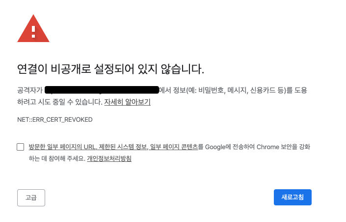

[기타] Chrome NET::ERR_CERT_REVOKED 해결방법

Self-signed certificate 인증서를 생성하여 HTTPS를 적용하게 되면 위의 이미지처럼 크롬에서
NET::ERR_CERT_REVOKED
에러가 발생하며 HTTPS 접근이 불가능하다. (Safari나 Firefox에서는 접근 가능하다)
해결방법
NET::ERR_CERT_REVOKED에러 페이지의 흰 배경을 마우스로 클릭한다. (해당 크롬 창으로 포커스를 맞춘다)thisisunsafe를 키보드로 입력한다.
주의할점은 thisisunsafe를 입력시에 어떤 인풋박스에 입력하는것이 아니라 허공에(?) 키보드타이핑을 해야한다.(무언가 인풋박스에 입력을 한다던가 하는게 아니다)
정상적으로 적용이 된다면 해당 키워드를 입력함과 동시에 자동으로 페이지가 리로드 되고 에러페이지 없이 정상적으로 접근된다.